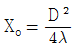
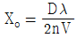
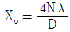
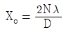

초음파비파괴검사기능사 (2003-10-05 기출문제)
1과목: 초음파탐상시험법
1. 자분탐상시험시 코일의 감은 수가 10회, L/D의 비가 4인 강봉을 코일법으로 검사할 때 요구되는 전류[A]는? (단, L은 봉의 길이, D는 외경임)
- 40A
- 525A
- 400A
- 1,125A
(정답률: 80%)

2. 침투탐상시험시 습식 및 속건식 등의 형태를 설명하는데 사용하는 용어는?
- 유화제 (emulsifiers)
- 세정제 (cleaners)
- 현상제 (developers)
- 침투액 (penetrants)
(정답률: 알수없음)
3. 음파의 진행방향과 입자가 진동하는 방향이 같은 파는?
- 종파
- 횡파
- 판파
- 표면파
(정답률: 80%)
4. 초음파의 주파수가 변할 때 나타나는 현상은?
- 주기(T)가 일정해 진다.
- 음향 임피던스가 변한다.
- 속도가 일정해 진다.
- 초음파의 흡수량, 산란량, 분해능이 변한다.
(정답률: 84%)
5. 초음파탐상시험으로 용접부를 검사할 때 주파수가 높은 것일수록 결함 크기를 측정하는 정확도는 어떻게 되는가?
- 높아진다.
- 낮아진다.
- 변화없이 일정하다.
- 주파수와 결함 크기는 측정과 무관하다.
(정답률: 80%)
6. 초음파탐상시험에서 탐상면이 거친 시험체에의 적당한 탐상 방법은?
- 평활한 탐상면에 사용하던 것보다 점도가 높은 접촉 매질과 저주파를 쓴다.
- 평활한 탐상면에 사용하던 것보다 점도가 낮은 접촉 매질과 저주파를 쓴다.
- 평활한 탐상면에 사용하던 것보다 점도가 높은 접촉 매질과 고주파를 쓴다.
- 평활한 탐상면에 사용하던 것보다 점도가 낮은 접촉 매질과 고주파를 쓴다.
(정답률: 46%)
7. 근거리음장 한계거리에 대한 식으로 올바른 것은? (단, Xo : 근거리음장 한계거리, D : 원형진동자의 지름, λ : 시험체 내에서의 파장, n : 진동수, V : 시험체 내에서의 파의 속도)




(정답률: 94%)
8. 세 개이상의 별개의 결정체를 한 탐촉자로 만든 것은?
- 분할형 탐촉자
- 샌드위치 결정 탐촉자
- 모자익 탐촉자
- 수직 직접접촉 탐촉자
(정답률: 55%)
9. 초음파탐상시험시 에코높이의 조정에 관계되는 조정부는?
- 측정범위
- 음속
- 리젝션
- 지연(delay)
(정답률: 70%)
10. 경사각탐촉자의 거리진폭특성곡선을 작성할 수 있는 표준시험편 구멍의 직경을 표시한 것으로 틀린 것은?
- STB-A2의 ø4×4
- ASME의 표준시험편 ø3.2
- STB-G의 ø4
- STB-A3의 ø4×4
(정답률: 25%)
11. STB-A1의 용도 설명으로 맞지 않는 것은?
- 경사각 탐촉자의 측정범위를 조정한다.
- 경사각 탐촉자의 입사점을 측정한다.
- 경사각 탐촉자의 특성을 측정한다.
- 경사각 탐촉자의 분해능을 측정한다.
(정답률: 알수없음)
12. 용접부의 초음파탐상검사에 필요한 거리진폭특성곡선을 작성할 수 있는 시험편은?
- STB-A1
- STB-A2
- STB-G
- STB-N
(정답률: 28%)
13. 용접물을 초음파탐상시험할 때 CRT상에 실제 결함으로 오판하기 쉬운 지시가 나타나는 가장 큰 원인이라 할 수 있는 것은?
- 탐촉자내에서 발생하는 반사 초음파에 의한 지시
- 용접물의 기하학적인 구조 형태에 의한 지시
- 모재에 존재하는 라미네이션에 의한 지시
- 표준시험편에서 나타나지 않은 결함의 지시
(정답률: 64%)
14. 수침법에 의한 초음파탐상시험에서 탐촉자와 시험편간의 물거리로 알맞는 것은?
- 멀수록 좋다.
- 짧을수록 좋다.
- 시편 두께의 두 배이어야 한다.
- 교정시 사용한 거리와 같아야 한다.
(정답률: 70%)
15. 시험품의 입사면에 가까운 불연속들을 검출할 수 있는 초음파 탐상기의 성능을 설명하는 용어는?
- 감도
- 침투력
- 분리
- 근거리분해능
(정답률: 82%)
16. 방사선투과시험의 형광스크린에 대해 올바른 설명은?
- 주로 감마선을 이용할 때 사용한다.
- 경금속을 검사할 때 필름 감광속도를 느리게 하기 위하여 사용한다.
- 주로 조사시간을 단축하기 위하여 사용한다.
- 조사시간을 단축하고 PB(납)스크린보다 값이 훨씬 저렴해서 경제적이다.
(정답률: 67%)
17. 와전류탐상검사를 수행할 때 시험부위의 두께 변화로 인한 전도도의 영향을 감소시키기 위한 방법은?
- 전압을 감소시킨다.
- 시험 주파수를 감소시킨다.
- 시험 주파수를 증가시킨다.
- fill-factor(필 펙터)를 감소시킨다.
(정답률: 31%)
18. 금속재료의 결함탐상에 일반적으로 사용하는 초음파탐상시험 주파수 범위는?
- 0.5MHz ∼ 10MHz
- 0.5kHz ∼ 50kHz
- 10kHz ∼ 10MHz
- 1Hz ∼ 1kHz
(정답률: 73%)
19. 공진법으로 두께를 측정하는 장치에서 CRT상의 표시방법은?
- 시간과 거리의 함수에 대한 불연속반사와 같은 지시로 표시된다.
- 고정 주파수에서 공진상태를 나타내는 지시로 표시된다.
- 연속적으로 변하는 주파수의 공진상태를 나타내는 지시로 표시된다.
- 간헐적으로 변하는 주파수의 변조상태를 나타내는 지시로 표시된다.
(정답률: 알수없음)
20. 전몰 수침법에서 시험체의 첫번째 저면반사지시앞에 여러개의 전면반사지시가 나타나는 것을 없애려면?
- 음향 렌즈를 사용한다.
- 물의 온도를 낮춘다.
- 낮은 주파수를 사용한다.
- 물거리를 증가시킨다.
(정답률: 59%)
2과목: 초음파탐상관련규격
21. 어떤 재질을 주파수 20MHz 탐촉자로 탐상할 때 파장은 얼마인가? (단, 그 재질 내부에서의 음속은 2.3×105cm/sec이다.)
- 0.325mm
- 0.255mm
- 0.115mm
- 0.⑤5mm
(정답률: 60%)
22. 펄스반사 초음파탐상시험에서 직접 접촉법과 관계가 없는 것은?
- 수침법
- 표면파법
- 경사각법
- 수직법
(정답률: 알수없음)
23. 다음 표준시험편 중에서 경사각 탐촉자의 입사점 및 굴절각 측정에 사용할 수 있는 것은?
- STB-A1
- STB-A2
- STB-G
- STB-N1
(정답률: 알수없음)
24. 수직법에 의한 초음파탐상시험시 발생하는 적산효과는 동일한 진행거리를 가지면서 여러 진행경로를 갖는 음파들의 중복에 의해 결함에코높이가 점점 높아지는 현상이다. 다음 중 적산효과 영향이 미치지 않는 것은?
- 결함이 시험체 중심에 존재한다.
- 결함이 작다.
- 시험체가 얇다.
- 음파 진행거리가 길다.
(정답률: 42%)
25. 경사각탐상에서 "탐촉자로 부터 나온 초음파빔의 중심축이 저면에서 반사하는 점 또는 탐상표면에 도달하는 점"이란 무엇인가?
- 스킵점
- 교축점
- 입사점
- 큐리점
(정답률: 69%)
26. 초음파탐상시험시 사용하는 표준시험편의 종류 설명중 가장 적당치 않은 것은?
- 전체 감도의 표준으로 삼기 위한 것
- 거리에 따른 결함의 종류를 알기 위한 것
- 탐상기의 전체 분해능을 알기 위한 것
- 탐촉자의 성능을 알기 위한 것
(정답률: 47%)
27. KS B 0816의 금속재료에 대한 초음파탐상시험 탐상도형을 표시기호로 나타낼 때 다음 중 틀린 것은?
- 흠집에코 : F
- 표면에코 : S
- 옆면에코 : W
- 끝면에코 : T
(정답률: 73%)
28. KS D 0252의 규격은 안쪽 및 바깥쪽의 양면을 자동 아크용접으로 제조한 강관에 대하여 규정하고 있다. 다음 중 이 규격의 적용 범위에 해당되지 않는 것은?
- 제조한 관의 바깥지름이 300mm이하의 것에 적용한다.
- 제조한 관의 두께가 6mm이상의 것에 적용한다.
- 탄소강 강관의 길이방향 용접부에 적용한다.
- 페라이트계 합금강 길이방향 용접부에 적용한다.
(정답률: 알수없음)
29. KS D 0040 건축용 강판의 초음파탐상시험시 2진동자 수직탐촉자에 의한 결함의 분류시 표시기호가 △이었다. 다음 중 올바른 것은?
- 압연방향에 평행하게 주사할 경우 결함에코 높이가 DM선을 초과한 것
- 압연방향에 평행하게 주사할 경우 결함에코 높이가 DH선을 초과한 것
- 압연방향에 평행하게 주사할 경우 DL선을 초과 DM선 이하인 것
- 압연방향에 직각으로 주사할 경우 DL선을 초과 DM선 이하인 것
(정답률: 50%)
30. KS B 0896에서 탐상기에 필요한 기능 중 주파수의 크기로 올바른 것은?
- 1 MHz
- 2 MHz
- 7 MHz
- 10 MHz
(정답률: 72%)
31. KS B 0817에 의거 초음파탐상시험을 할 때 시험결과에 대한 기록에 기재할 내용이 아닌 것은?
- 흠집이 있는 부분의 위치 등의 추정 스케치
- 흠집의 에코 높이 및 바닥면 다중 에코의 상태
- 필요로 하는 탐상 도형
- 에코 높이 구분선 설정서
(정답률: 59%)
32. KS D 0040에 의거 2진동자 수직탐촉자에 의한 결함의 분류시 압연방향에 직각으로 주사할 때 표시기호로 X인 결함은?
- DL선 초과 DM선이하
- DM선을 초과
- DM선 넘어 DH선이하
- DH선을 초과
(정답률: 30%)
33. 금속재료의 펄스반사법에 따른 초음파탐상시험 방법에서 최소 탐상거리와 같은 뜻으로 주로 탐촉자를 포함한 탐상기의 성능표시 용어는?
- 밴드폭
- 불감대
- 펄스 반복거리
- 탐상감도
(정답률: 0%)
34. KS B 0896에서 규정한 강용접부의 초음파탐상 시험방법에서 규정하고 있는 접촉 매질의 종류로 적당한 것은? (단, 탐상면의 거칠기는 80μm이상이다.)
- 농도 75% 이상의 글리세린 수용액
- 엔진오일
- 농도 50% 이상의 글리세린 수용액
- 물
(정답률: 알수없음)
35. KS B 0897에 규정한 경사각 탐촉자의 사용 조건에 대한 설명으로 틀린 것은?
- 진동자의 공칭주파수는 5MHz이다.
- 시험주파수는 3.0 ∼ 6.5 MHz로 한다.
- 탐촉자의 공칭 굴절각과 탐상 굴절각의 차는 ±2° 로 한다.
- 빔 중심축의 치우침에 대한 판독단위는 1° 로 측정하여 2° 를 넘지 않도록 한다.
(정답률: 54%)
36. KS B 0831에서 표준시험편의 재료중 구상화 어닐링한 열처리 방법을 사용한 시험편은?
- STB-G
- STB-N1
- STB-A1
- STB-A3
(정답률: 70%)
37. KS B 0817에 의한 초음파탐상 장치의 성능 중에 시험할 때의 리젝션의 위치는?
- 원칙적으로 사용하지 않는다.
- 10%
- 20%
- 탐상기 성능에 따라 다르다.
(정답률: 77%)
38. 표준시험편에 대한 설명중 옳은 것은?
- 수직탐상용 A2 시험편은 탐상기의 감도조정과 분해능점검에 사용된다.
- 수직탐상용 A3 시험편은 탐상기의 측정범위와 감도조정에 사용된다.
- STB-G는 경사각탐상시 감도조정외에 탐상기의 특성시험이나 탐촉자의 성능시험에 사용된다.
- STB-N1은 두께 13mm부터 60mm의 얇은 강판의 수직탐상에서 감도조정에 사용된다.
(정답률: 42%)
39. KS B 0896에 의해 판 두께 20mm인 용접부를 굴절각 70도로 탐상할 경우의 측정범위로 적당한 것은?
- 100mm
- 125mm
- 150mm
- 200mm
(정답률: 알수없음)
40. KS B 0817(금속재료의 펄스반사법에 따른 초음파탐상 시험방법 통칙)에 따른 에코높이 기록 방법이 아닌 것은?
- 표시기 눈금의 풀 스케일에 대한 백분율(%)
- 미리 설정한 기준선 또는 특정 에코 높이와의 비의 데시벨(dB) 값
- 미리 설정한 에코 높이를 구분하는 영역의 부호
- 흠 지시 길이의 중앙 또는 끝의 위치
(정답률: 40%)
3과목: 금속재료일반 및 용접일반
41. 컴퓨터 웹 브라우저에서 현재 방문한 사이트를 추후에 다시 방문하기 위해 사용하는 기능은?
- 다시읽기
- 즐겨찾기
- 검색
- 파일접속
(정답률: 50%)
42. 검색엔진의 논리 연산자 중 연산순위가 가장 높은 연산자는?
- AND
- OR
- NOT
- NOR
(정답률: 46%)
43. 컴퓨터에서 주변장치를 연결하기 위한 포트로 최대 12Mbps의 전송속도를 가지며, 주변장치를 127대 까지 하나의 포트에 연결할 수 있는 것은?
- 직렬 포트
- 병렬 포트
- PS/2 포트
- USB 포트
(정답률: 알수없음)
44. 인터넷에서 수많은 정보의 정보검색을 잘하기 위한 테크닉으로 옳지 않은 것은?
- 평소에 인터넷을 많이 이용한다.
- 다양한 키워드를 조합해 사용한다.
- 검색 엔진의 사용법과 기능을 마스터한다.
- 어느 한 검색엔진만을 집중적으로 사용한다.
(정답률: 24%)
45. 다른 사람의 컴퓨터나 프로그램에 침입하여 타인의 컴퓨터 파일을 파괴하는 등의 피해를 입히는 행동을 하는 프로그램은?
- Vaccine
- Hacker
- Cracker
- Virus
(정답률: 알수없음)
46. 변형전과 변형 후의 위치가 어떤면을 경계로 하여 대칭이 되는 것과 같은 변형을 하는 것은?
- 전위(dislocation)
- 쌍정(twin)
- 상률(phase rule)
- 슬립벤드(slip band)
(정답률: 73%)
47. 순산소에 의해 산화열로 정련하는 제강법은?
- 전로 제강법
- 지로우 제강법
- 도가니로 제강법
- 유동로 제강법
(정답률: 알수없음)
48. 순수한 시멘타이트(Fe3C)의 자기 변태점은?
- 870℃
- 770℃
- 410℃
- 210℃
(정답률: 알수없음)
49. 자기변태점과 같은 의미는?
- 고온 가공점
- 변태 응력점
- 비스만테스점
- 퀴리점
(정답률: 64%)
50. 다음 중 반도체 금속은?
- Fe
- Si
- Al
- Mg
(정답률: 92%)
51. 순철의 용융점(℃)은?
- 1601
- 1539
- 1400
- 912
(정답률: 알수없음)
52. 땜납,의약품,식품 등의 포장용 튜브로 사용되는 저용융점 금속은?
- 구리
- 주석
- 코발트
- 몰리브덴
(정답률: 55%)
53. 침탄에 사용할 수 있는 재료로 가장 적합한 것은?
- 탄소 0.2 [%] 이하의 탄소강
- 탄소 0.7 [%] 정도의 탄소강
- 탄소 0.9 [%] 정도의 탄소강
- 탄소 1.0 [%] 이상의 탄소강
(정답률: 67%)
54. 상온에서 액체인 금속은?
- Hg
- Al
- Se
- Li
(정답률: 77%)
55. 청동의 주 성분은?
- 구리, 망간
- 구리, 크롬
- 구리, 주석
- 구리, 텅스텐
(정답률: 70%)
56. 구상흑연 주철의 흑연을 구상화시키는 첨가원소로 가장 좋은 것은?
- Mg
- Cr
- S
- Mo
(정답률: 55%)
57. 철-탄소계 상태도에서 일어나지 않는 반응은?
- 포정반응
- 탄성반응
- 공정반응
- 공석반응
(정답률: 알수없음)
58. 가스 절단과 같은 원리로 표면에서 껍질을 벗기듯 표면을 가공하는 것은?
- 가스 스카핑
- 용사법
- 원자 수소법
- 레이저 용접
(정답률: 73%)
59. 여러개의 돌기를 만들어 용접하는 저항 용접법인 것은?
- 시임 용접
- 프로젝션 용접
- 점 용접
- 펄스 용접
(정답률: 84%)
60. 다음 중에서 용접 작업할 때 전기의 열원이 필요하지 않는 용접법은?
- 일렉트로 가스 아크 용접
- 일렉트로 슬래그 용접
- 논 가스 아크 용접
- 테르밋 용접
(정답률: 알수없음)
먼저, 강봉의 내경을 구해야 합니다. 외경과 L/D 비가 주어졌으므로, 내경은 외경에서 두께를 빼면 됩니다.
외경 = D
내경 = D - 2t (t는 두께)
L/D = 4 = L/(D-2t)
L = 4(D-2t)
코일의 인덕턴스는 다음과 같이 계산할 수 있습니다.
L = μN^2A/l
여기서,
μ: 자기유도계수 (4π x 10^-7 H/m)
N: 코일의 감수 (10회)
A: 코일의 면적 (강봉의 단면적)
l: 코일의 길이 (강봉의 길이)
A = π/4 x (D^2 - (D-2t)^2)
l = L = 4(D-2t)
따라서,
L = μN^2π/4 x (D^2 - (D-2t)^2)/(4(D-2t))
이제, 요구되는 전류를 계산할 수 있습니다.
L = L(I)
V = L(dI/dt)
I = V/(Lω)
여기서,
V: 시험용 전압 (주어지지 않음)
ω: 시험용 주파수 (주어지지 않음)
따라서, 답은 주어진 보기 중 "1,125A" 입니다.